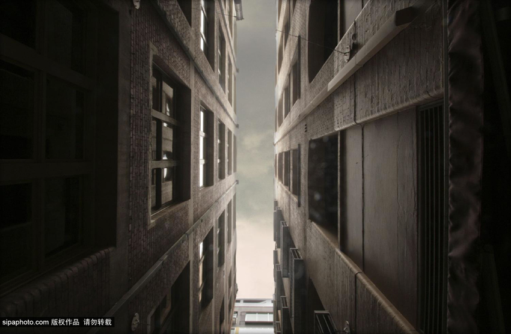
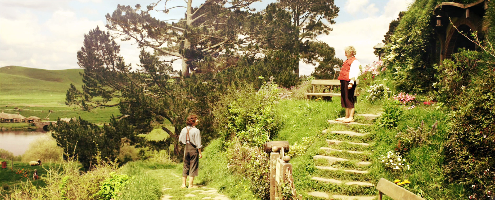
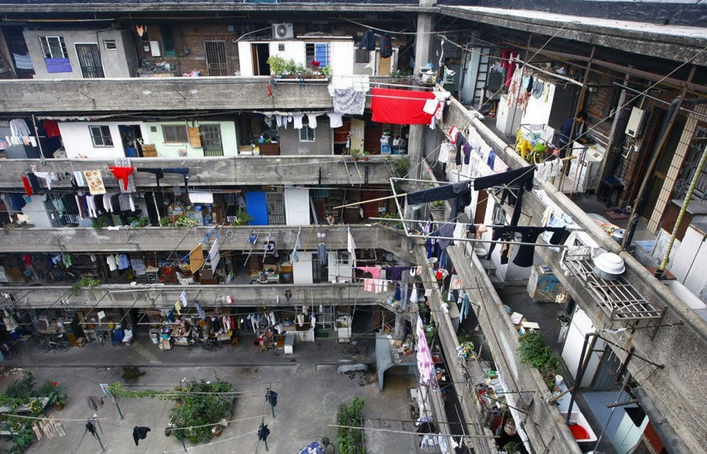

为什么步行街的背靠背的座椅中，朝向道路的总是坐满人，而背向道路的没有人？
为什么你走在马路上，接连100米，旁边是摩天大楼一面水泥涂墙，你觉得厌烦，把衣领竖起来，只想快点走完？

为什么有些广场上总有停留的人群，而有些广场空空如也？
因为
人的最大兴趣是看其他人
所以面朝人行道的座椅面总是座无虚席，而面对空荡道旁树的没有人。
来自Jan Gehl的启发
已有的建筑传统和时代因袭的城建方式具有许多重要而美好的质量，在我们的社会不断工业化的发展进程中，这些质量总是有被冷落和埋没的危险。
我们可曾想过，人造环境是如何支持–或者扼杀–公共空间中各种类型的生活的？
公共空间的三类活动
公共空间中的户外活动可以划分为三类：
- 必要性活动
- 自发性活动
- 社会性活动
每一类活动类型对于物质环境的要求都大不相同。
必要性活动
必要性活动包括了那些多少有点不自主的活动，如上学、上班呢、购物、等人、候车、出差、收送快件等。也就是日常工作和生活的必要活动。
因为这些活动是必要的，它们的发生很少受到物质构成的影响，一年四季在各种条件下都可能进行，相对来说与公共空间的环境关系不大，参与者没有选择余地。
自发性活动

自发性活动是另一种全然不同的活动，只有在人们有参与的医院，并且在时间、地点可能的情况下才会发生。这一类型的活动包括了散步、呼吸新鲜空气、驻足观望有趣的事情以及坐下来晒太阳。
这些活动只在外部条件适宜、光线、声音等条件都具有吸引力的时候才会发生。
当户外空间的质量不理想时，就只能发生必要性活动。
社交性活动
社会性活动指的是在公共空间中有赖于他人参与的各种活动，包括互相打招呼、交谈、各类公共活动以及最广泛的社会活动–被动式接触，即仅以试听来感受他人。
这些活动一般由前两类活动发展而来，是一种连锁反应。
人们在同一空间中徜徉、休息，自然就会引发各种社会性活动。在集中式公寓中，洗衣房、咖啡厅、阅览室、休息室都为社会性活动创造了接触的机会。
低强度的接触也是进一步发展其他交往形式的起点，这种发展不是实现规划好的，而是自然发生的，难以预测的。
如果租客常常互相从别人的门前经过，特别是在公共空间见面，或因为共同的工作地点而频繁相见，那顺路探访、“串门”、“邀约”乃至筹划一些共同感兴趣的活动，也就是顺理成章的事情了。
公共活动与空间的质量
公共活动的内容和特点很容易受到物质规划的的影响。通过材料、色彩的选择可以在公共空间中创造出五光十色的情调；同样，通过规划决策可以影响活动的类型。
典型的现代塔楼小区，电梯是主流的交通工具，大家在闭塞的电梯间里，很难产生愉快的生活交流。

而在90年代主流的低层小区里，适用于步行交通的城镇，周围都有供人们逗留的场所。可以看到，这些住宅区，充满了活力和生机。
对于新型社交型公寓而言，开发充足优美的公共空间，并在这个公共空间中有意分布几个小型“驻足点”，会大大提高它的“人气”。
小结
综上，对于社交型公寓而言，大规模的节目并不是研究的重点；相反，日常生活所以来的空间才是应受到重视和关心的焦点。它对公共空间的要求并不太高，但是相对广泛：
1. 能方便而自由的进出；
2. 能在公寓内以及其周边流连；
3. 能从建筑和装饰本身得到愉悦；
4. 能与人见面和聚会－－不管是正式的还是临时的，都很关键。
上述是社交型公寓最基本的要求，他们正式要求为日常生活提供更好、更适用的环境，是公寓居住体验中最重要的一环。
中国如雨后春笋般的互联网公寓中，私人空间成了最大的营销点和开发商重点投入对象，然。。。
– Color公寓·居住体验研究中心